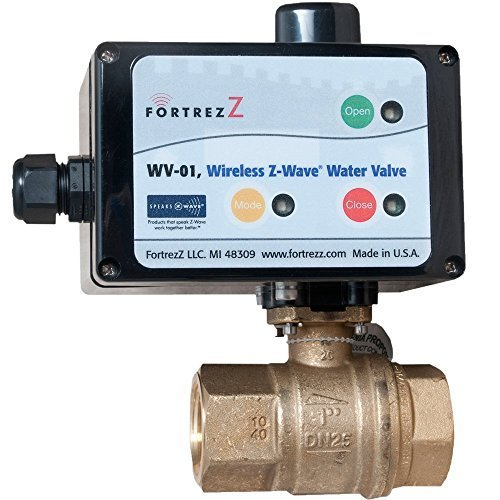

Wireless Z-Wave Water Valve 3/4” inch by FortrezZ¶

Brief information¶
WV-01 is a new professional grade, electrically operated wireless water valve introduced by FortrezZ, LLC. Used in a wireless Z-Wave home automation network in conjunction with any Z-Wave water alarm sensor (ex. WWA-0X), the WV-01 can reduce or eliminate damages caused by leaky plumbing or appliances. Every year nearly over 1 million families have their homes ruined and their lives overturned by water damage and the subsequent repairs. These incidents are always unexpected and the cost of repairs can run into the tens of thousands of dollars. This Patented wireless water detection and automatic water shutoff system can easily be installed on any home’s water supply line by a professional, certified plumber.
How to add to VENUS app¶
- 1. Activation
- Press “Add button” (button ‘+’) in app
- Press program button (Mode button) once
- Wait for VENUS scan & detect this device and inform in app
- 2. Reset before adding
- Press “Add button” (button ‘+’) in app
- Press program button (Mode button) once to reset
- Press program button (Mode button) once again to add
- Wait for VENUS scan & detect this device and inform in app
Configuration description¶
Water alarm mode
Setting to select alarm mode for this device.
- Water alarm mode: Default mode. Water valve will close when receiving trigger (0xFF) from associated sensor. However, this device does not open the valve when no alarm received from associated sensor.
- Water level mode: Water valve will close when receiving trigger (0xFF) from associated sensor and open the valve when no alarm received from associated sensor.
Available setting 0x00 - Water alarm mode 0xFF - Water level mode Default setting 0x00 Water level timeout
Time-out to device changes status from CLOSE (valve is closed) to OPEN (valve is openned)
Available setting 0 ~ 32767 (in minutes) Default setting 60